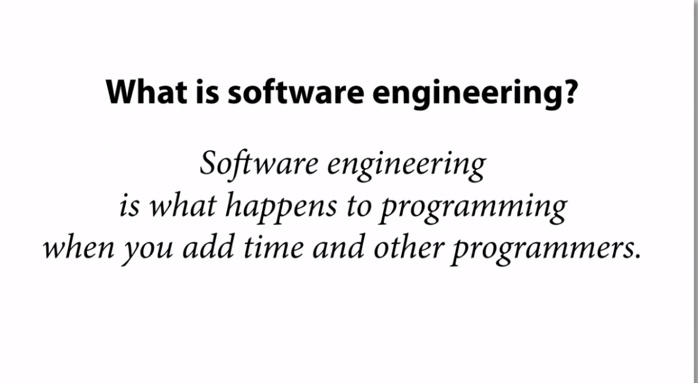

1. 引子：Software engineering vs programming

(截图来自：Go with Versions)
什么是programming？拿到一个需求，写代码，解决问题，结束，这是programming；
什么是software engineering？随着时间的推移，后面接手的工程师是否能够准确地阅读代码、原有代码是否更容易扩展新功能、是否具有良好的可测试性以至于方便重构、是否有良好的版本控制，这是software engineering。
举个例子，我们都知道在 go 中引用第三方的库要用go import，那么对比一下这两种写法：
|
|
对于之后的开发工程师而言，看到前者，并不知道 uuid 来自哪儿，但是后者就清晰地表现了这一点。
Golang 的很多设计都遵循了这个原则，即让开发更简单容易，而不是更让人困惑、更复杂。
2. go版本控制的原则
- 兼容性（Compatibility）
- 可重复性（Repeatability）
- 合作（Cooperation）
包管理工具，支持包的下载、编译和链接依赖
3. go mod的关键点
- 版本控制：semver
- 包的唯一标识
- 导出，引入，更新
包管理管理的本质是依赖管理。
- go的版本管理遵循哪些原则：兼容性原则，可重复性原则，合作性。具体解释？
- 作为发布方，从上到下的流程：
- 怎么保证这次用的和上次用的是一样的版本？使用同一个tag；
- 怎么让别人知道自己是谁？在go.mod中module 声明；
- 如果A依赖B和C，而B依赖v1版本的D，C依赖v2版本的D，该怎样避免菱形的依赖链呢？import中加入依赖的版本号，major version为0或1的在import中可以省略，例如我们使用的ginc和packr/v2
- 如何获取依赖的包？go get，-u获取最新版本，先去找tag，没有tag找最新的commit，还可以go get xxxx@develop或者go get xxxx@x.y.z，获取指定分支或tag的版本
举例：
- iOS：CocoaPods（中心化）、Carthage（去中心化）、Swift Package Manager（亲儿子）
- macOS：Homebrew
- JavaScript：npm